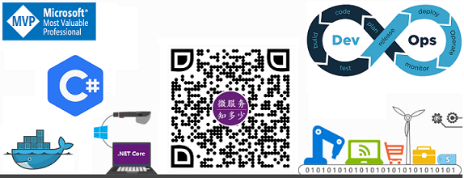

简介
我是颜圣杰，.NET技术爱好者，Microsoft MVP。热爱学习和写作，拥抱开源。一名立志成为架构师并为之努力奋斗的程序员。于2014年毕业于河南大学网络工程专业，一直从事于.NET软件开发工作。对Abp、Python、DevOps、AI也略有学习，目前正在学习研究微服务。
写博历程
从2016年开始写博客，活跃于简书和博客园两个博客平台，累计博文100+篇，涉及.NET、SQLServer、DDD、Docker、Python等技术。在简书平台创建了.NET Core、Abp和DDD三个专题，用于相关技术的汇总、分享和推广，目前简书平台有3000+关注。博客主要包括四个系列：
第一个系列《ASP.NET MVC系列》来源于对《ASP.NET MVC Interview Questions and Answers - By Shailendra Chauhan》的翻译。
第二个系列《设计模式之小试牛刀》是对设计模式的学习总结。
第三个系列《Abp入门系列》是对.NET上流行的开源框架Abp的学习和实战分享，并将自己的学习Demo开源供他人学习参考。
第四个系列《DDD理论学习系列》是对Abp中接触到的DDD概念的研究学习，并计划结合实际案例进行进一步的应用。
计划
目前正在学习研究 .NET Core 微服务和云原生技术。
初衷
创建该公众号的目的是分享.NET微服务技术栈的相关知识。 希望您在此有所收获，也欢迎您在公众号中积极互动，并为公众号的运营提出宝贵意见！
联系我
- 简书：https://www.jianshu.com/u/39ec0e6b1844
- 博客园：https://www.cnblogs.com/sheng-jie
- GitHub地址：https://github.com/sheng-jie
- 微信号：ysjshengjie（加微信，请备注姓名及来源）
